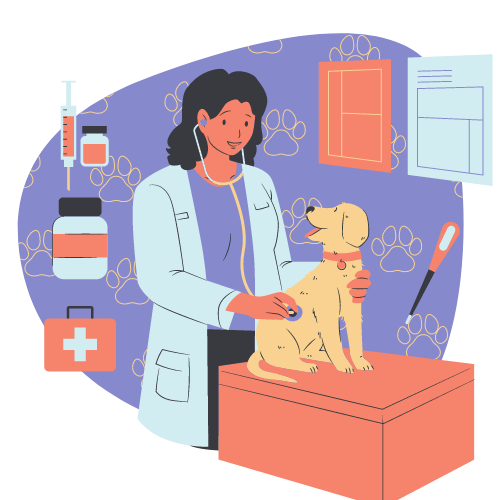
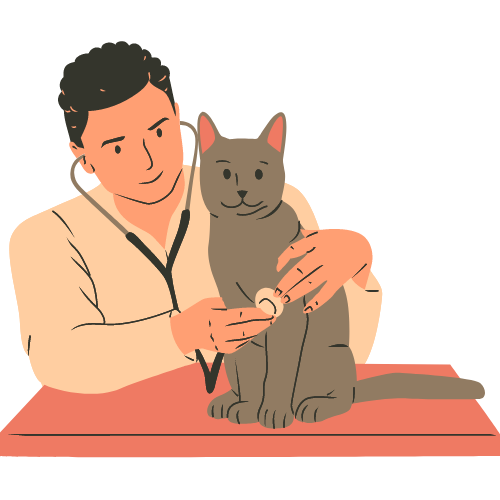

Quem Somos
Atendimento clínico e cirúrgico a pequenos animais, na cidade de São Paulo-SP e região há 30 anos. Nossos atendimentos incluem internações, imunizações, exames laboratoriais e de imagem, eletrocardiograma e ecocardiograma. Nossa equipe clínica tem especialidades como oftalmologia, cardiologia, dermatologia, ortopedia, fisioterapia, acupuntura.
Consultas
Oferecemos a consulta de rotina para realizar exame de saúde preventivo e essencial para garantir que seu animal de estimação esteja em boas condições físicas. Durante a consulta, o veterinário realizará uma avaliação geral do animal, verificará seus sinais vitais e discutirá qualquer preocupação que você possa ter sobre sua saúde. É recomendado agendar consultas de rotina regularmente, pois isso ajuda a detectar problemas de saúde em estágios iniciais e permite que seu animal receba as vacinas necessárias para mantê-lo protegido contra doenças comuns.
Temos também a consulta para vacinação, que é uma parte crucial dos cuidados de saúde para animais de estimação. As vacinas ajudam a prevenir doenças graves e potencialmente fatais, protegendo seu animal contra vírus e infecções bacterianas. Durante a consulta de vacinação, o veterinário administrará as vacinas adequadas ao histórico de saúde e às necessidades específicas do seu animal. Mantenha o calendário de vacinação atualizado para garantir que seu animal esteja sempre protegido e saudável.
Fazemos exames clínicos para obter avaliações abrangentes da saúde do seu animal de estimação. O veterinário realizará uma revisão completa dos sistemas do corpo do animal, verificando suas condições físicas e de comportamento. Isso ajuda a identificar problemas de saúde ocultos e permite que o veterinário ofereça conselhos personalizados para melhorar a qualidade de vida do seu animal.
Também auxiliamos com comportamentos desafiadores ou indesejados. A consulta de comportamento é destinada a ajudar a entender e resolver problemas de comportamento, como agressão, ansiedade, latidos excessivos ou comportamentos destrutivos. O veterinário fornecerá orientações e técnicas para treinamento e manejo, criando um ambiente saudável e harmonioso para o animal e sua família.
Cirurgias
Realizamos mais de 10 tipos de cirurgia, a mais realizada pelo nosso centro de especialistas é a castração, para remover os órgãos reprodutivos do animal (ovários e útero em fêmeas, testículos em machos). Além de controlar a reprodução, a castração pode ajudar a prevenir problemas de saúde, reduzir comportamentos indesejados e diminuir o risco de certos tipos de câncer.
Temos a cirurgia de emergência que são são realizadas em resposta a lesões graves ou condições médicas urgentes que requerem intervenção cirúrgica imediata. Isso pode incluir cirurgias para tratar traumas, obstruções intestinais, torções gástricas, entre outras emergências médicas.
Nossa clínica dá suporte de oncologia, e fazemos a remoção de tumores A cirurgia para remoção de tumores é comum em casos de câncer de pele, tumores de tecidos moles ou tumores internos. A remoção cirúrgica é uma opção para eliminar ou reduzir o crescimento dos tumores, dependendo de sua localização e estágio.
Também fazemos cirurgia ortopédica, dentária, de Hérnia, de olhos e de emergência urinária: Cirurgias urinárias de emergência podem ser necessárias em casos de obstrução do trato urinário, pedras na bexiga ou outros problemas que afetam o sistema urinário do animal.